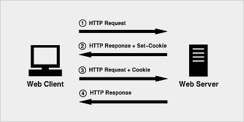

1. 掌握WebDriver屏幕截图方法
2. 熟悉验证码处理的方式
说明：把当前操作页面，截图保存到指定位置
说明：自动化脚本是由程序去执行的，因此有时候打印的错误信息并不是十分明确。如果在执行出错的时候对当前
窗口截图保存，那么通过图片就可以非常直观地看到出错的原因。
说明：在WebDriver类库中，提供了截图方法，我们只需要调用即可；
方法：
driver.get_screenshot_as_file(imgpath) --> 截取当前窗口
(imgpath：图片保存路径)
需求：
1. 填写注册A页面注册信息，填写完毕，截图保存；
1. 打开注册实例.html
2. 切换注册A页面frame框架 --> driver.switch_to.frame(myframe1)
3. 输入注册信息
4. 调用截屏方法 --> driver.get_screenshot_as_file("../Image/Image01.jpg")
说明：一种随机生成的信息（图片、数字、字母、汉字、算术题）等为了防止恶意的请求行为，增加应用的安全性。
说明：在Web应用中，大部分系统在用户登陆的时候都要求输入验证码，而我们在设计自动化测试脚本的时候，就需要
面临处理验证码的问题。
说明：WebDriver类库中没有对验证码处理的方法，但是在这里可以叙说下针对验证码的几种常用处理方式；
方式：
1). 去掉验证码
(测试环境下-采用)
2). 设置万能验证码
(生产环境和测试环境下-采用)
3). 验证码识别技术
(通过Python-tesseract来识别图片类型验证码；识别率很难达到100%)
4). 记录cookie
(通过记录cookie进行登录-推荐)
1. 去掉验证码、设置万能验证码：太简单都是开发来完成，我们在这里不做讲解
2. 验证码识别技术：成功率不高，验证码种类繁多，不太适合；
3. 记录cookie：比较实用，我们对它进行下讲解；

cookie：
1. Cookie是由Web服务器保存在用户浏览器上的小文本文件，它可以包含有关用户的信息。
2. Cookie数据格式：键值对组成（python中的字典）
3. Cookie产生：客户端请求服务器，如果服务器需要记录该用户状态，就向客户端浏览器颁发一个Cookie数据
4. Cookie使用：当浏览器再次请求该网站时，浏览器把请求的数据和Cookie数据一同提交给服务器，服务器检
查该Cookie，以此来辨认用户状态。
说明：
1. 用户第一次登陆时，勾选下次直接登陆或者记住密码，就是采用记录cookie实现的
2. cookie内记录用户名和密码(加密)信息，只要请求时服务器收到cookie，就识别成功，默认为已登陆。
说明：
1. WebDriver中对cookie操作提供相应的方法
方法：
1. get_cookie(name) --> 获取指定cookie
name:为cookie的名称
2. get_cookies() --> 获取本网站所有本地cookies
3. add_cookie(cookie_dict) --> 添加cookie
cookie_dict：一个字典对象，必选的键包括："name" and "value"
需求：
1. 手动登陆百度，获取cookie
2. 使用获取的cookie，在WebDriver中，添加Cookie，达到登陆目的
BDUSS是登录百度后的唯一身份凭证(*.baidu.com)，拿到BDUSS就等于拿到帐号的控制权，
通行贴吧、知道、百科、文库、空间、百度云等百度主要产品。
1. 登陆baidu，登陆的时候抓取 (BDUSS)
2. 使用add_cookie()方法，添加 (BDUSS)键和值
3. 调用刷新方法 driver.refresh()
from selenium import webdriver
import time
driver=webdriver.Firefox()
driver.get("https://www.baidu.com")
driver.add_cookie({'name':'BDUSS','value':'根据实际填写'})
time.sleep(3)
driver.refresh()
time.sleep(3)
1. 截屏方法
2. 验证码常用的处理方式
3. Cookie的作用